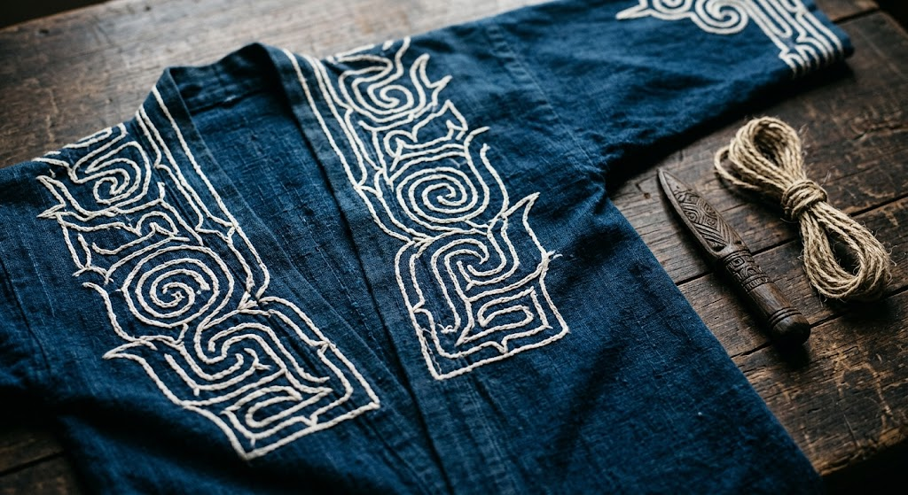
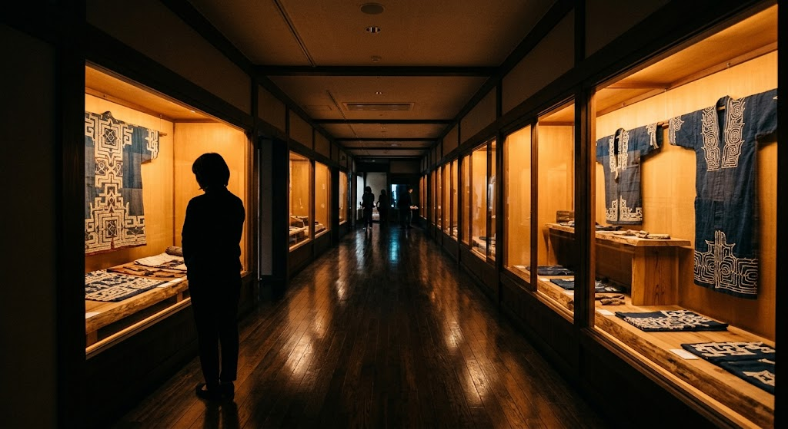

北海道白老町 民族共生象徴空間 ウポポイ
アイヌ民族自身の視点で語る、日本初の国立アイヌ文化博物館。約3万年前から現代へ続く物語に出会う場所です。
2020年7月、北海道白老町の民族共生象徴空間内に開館した日本初の国立アイヌ文化博物館。アイヌ文化の復興と継承、そして国内外への理解を目的に設立されました。
ことば、世界観、くらし、歴史、しごと、交流。アイヌ民族自身の視点から、約3万年前から現代までを、アイヌ語パネルや音声ガイドとともにたどります。


充実の常設展示室と特別展示室で、工芸品や衣装、言語、生活習慣の復元を最新の展示技術で紹介します。
民族共生象徴空間内にあり、周囲の自然環境やアイヌの精神文化と調和した設計です。
教育普及活動や調査研究も活発に行い、アイヌ民族の尊厳を尊重しながら多様性への理解を広げています。
地域の方々や国内外の来館者から高く評価されています。
アイヌ民族の歴史や文化を改めて認識し体感できる貴重な設備です。20年ぶりの北海道旅行で一番訪ねたい場所でした。あいにくの雨模様でしたが、また今度訪れる時には周辺の湖畔や自然まで含めて時間をかけ理解したいと思います。
北海道の先住民であるアイヌ、その固有の文化を扱った専門の博物館。北海道内にはアイヌに関する博物館は複数あるが、おそらくここが最大のものだろう。 展示物はアイヌの風俗を物語る衣食住から狩猟採集、宗教に至るまで多様な事物に及び、とても面白い。解説も分かりやすく、mini theatreなどもあって何時間眺めていても飽きが来ない。 考古学的なものから現代に生きるアイヌの方々に取材した映像までとてもすばらしい博物館だった。アイヌ＝北海道と単純には語れない面まで示されていたのは大変興味深い。 北海道を訪れるならば必見の施設と言ってもよいと思う。